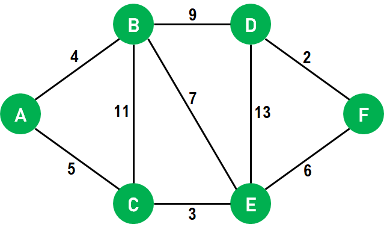

Introduction to Dijkstra's Algorithm
Now that we already knew some basic Graphs concepts let's dive into understanding the concept of Dijkstra's Algorithm.
Ever wondered how does Google Maps find the shortest and fastest route between two places?
Well, the answer is Dijkstra's Algorithm. Dijkstra's Algorithm is a Graph algorithm that finds the shortest path from a source vertex to all other vertices in the Graph (single source shortest path). It is a type of Greedy Algorithm that only works on Weighted Graphs having positive weights. The time complexity of Dijkstra's Algorithm is O(V²) with the help of the adjacency matrix representation of the graph. This time complexity can be reduced to O((V + E) log V) with the help of an adjacency list representation of the graph, where V is the number of vertices and E is the number of edges in the graph.
Basics of Dijkstra's Algorithm
- Dijkstra's Algorithm basically starts at the node that you choose (the source node) and it analyzes the graph to find the shortest path between that node and all the other nodes in the graph.
- The algorithm keeps track of the currently known shortest distance from each node to the source node and it updates these values if it finds a shorter path.
- Once the algorithm has found the shortest path between the source node and another node, that node is marked as "visited" and added to the path.
- The process continues until all the nodes in the graph have been added to the path. This way, we have a path that connects the source node to all other nodes following the shortest path possible to reach each node.
Requirements
Dijkstra's Algorithm can only work with graphs that have positive weights. This is because, during the process, the weights of the edges have to be added to find the shortest path.
If there is a negative weight in the graph, then the algorithm will not work properly. Once a node has been marked as "visited", the current path to that node is marked as the shortest path to reach that node. And negative weights can alter this if the total weight can be decremented after this step has occurred.
Understanding Dijkstra's Algorithm
The following is the step that we will follow to implement Dijkstra's Algorithm:
- Step 1: First, we will mark the source node with a current distance of 0 and set the rest of the nodes to INFINITY.
- Step 2: We will then set the unvisited node with the smallest current distance as the current node, suppose X.
- Step 3: For each neighbor N of the current node X: We will then add the current distance of X with the weight of the edge joining X-N. If it is smaller than the current distance of N, set it as the new current distance of N.
- Step 4: We will then mark the current node X as visited.
- Step 5: We will repeat the process from 'Step 2' if there is any node unvisited left in the graph.
Let us now understand the implementation of the algorithm with the help of an example:
- We will use the above graph as the input, with node A as the source.
- First, we will mark all the nodes as unvisited.
- We will set the path to 0 at node A and INFINITY for all the other nodes.
- We will now mark source node A as visited and access its neighboring nodes. We have only accessed the neighboring nodes, not visited them.
- We will now update the path to node B by 4 with the help of relaxation because the path to node A is 0 and the path from node A to B is 4, and the minimum((0 + 4), INFINITY) is 4.
- We will also update the path to node C by 5 with the help of relaxation because the path to node A is 0 and the path from node A to C is 5, and the minimum((0 + 5), INFINITY) is 5. Both the neighbors of node A are now relaxed; therefore, we can move ahead.
- We will now select the next unvisited node with the least path and visit it. Hence, we will visit node B and perform relaxation on its unvisited neighbors. After performing relaxation, the path to node C will remain 5, whereas the path to node E will become 11, and the path to node D will become 13.
- We will now visit node E and perform relaxation on its neighboring nodes B, D, and F. Since only node F is unvisited, it will be relaxed. Thus, the path to node B will remain as it is, i.e., 4, the path to node D will also remain 13, and the path to node F will become 14 (8 + 6).
- Now we will visit node D, and only node F will be relaxed. However, the path to node F will remain unchanged, i.e., 14.
- Since only node F is remaining, we will visit it but not perform any relaxation as all its neighboring nodes are already visited.
- Once all the nodes of the graphs are visited, the program will end.
Flowchart:
Video Reference:
Advantages & Disadvantages
Let us discuss some advantages of Dijkstra's Algorithm:
- One primary advantage of using Dijkstra's Algorithm is that it has an almost linear time and space complexity.
- We can use this algorithm to calculate the shortest path from a single vertex to all other vertices and a single source vertex to a single destination vertex by stopping the algorithm once we get the shortest distance for the destination vertex.
- This algorithm only works for directed weighted graphs, and all the edges of this graph should be non-negative.
Despite having multiple advantages, Dijkstra's algorithm has some disadvantages also, such as:
- Dijkstra's Algorithm performs a concealed exploration that utilizes a lot of time during the process.
- This algorithm is impotent to handle negative edges.
- Since this algorithm heads to the acyclic graph, it cannot calculate the exact shortest path.
- It also requires maintenance to keep a record of vertices that have been visited.